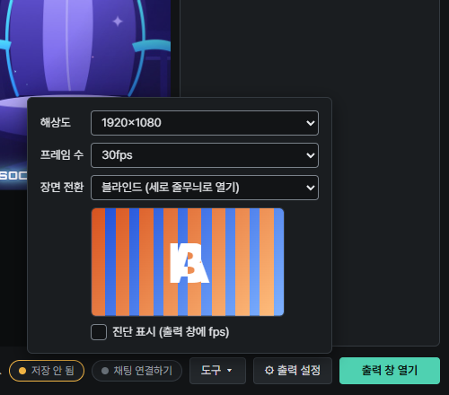

장면과 전환 효과
장면이란?#
화면 위쪽 탭이 장면입니다. "대기 중", "곧 시작", "잠시 쉬는 중"처럼 용도별로 여러 장면을 만들어 두고 방송 중에 바꿉니다. 장면은 최대 20개입니다.
- ＋: 새 장면, 복제 버튼: 지금 장면 복사, ‹ ›: 순서 바꾸기, 휴지통: 삭제
- 탭을 클릭하면 편집, 더블클릭하면 이름 바꾸기입니다.
- Ctrl+1~9: 편집할 장면 전환
- 템플릿으로 시작하면 "대기 중", "곧 시작" 2개가 이미 들어 있습니다.
편집 중인 장면과 방송 중인 장면#
기본은 편집하는 장면이 곧 방송에 나가는 장면입니다. 방송이 나가는 중에 편집하다 보면 시청자에게 작업 과정이 그대로 보이므로, 방송 중에는 둘을 나누는 것이 안전합니다.
- 장면 탭 오른쪽의 방송: … 메뉴를 엽니다.
- "편집 중인 장면을 바로 방송" 을 끕니다.
- 이제 탭을 눌러 편집해도 방송 화면은 그대로이고, 방송에 내보낼 장면을 따로 고릅니다. 각 탭 오른쪽 점이 방송 표시입니다. ●(채워진 점) 이 방송 중인 장면이고, ○(빈 점) 을 누르면 그 장면을 방송에 내보냅니다.
방송에 내보낼 장면은 방송 리모컨과 단축키로 바꿀 수 있습니다.
전환 효과#
방송에 나가는 장면이 바뀔 때 효과가 쓰입니다. [⚙ 출력 설정] ▸ 장면 전환에서 고릅니다. 고르면 바로 아래에서 A ↔ B 미리보기가 계속 돌아 어떻게 바뀌는지 보여 줍니다.

| 효과 | 설명 |
|---|---|
| 페이드 | 서서히 겹쳐 바뀝니다. |
| 밀기 (4방향) | 새 장면이 위/아래/왼쪽/오른쪽에서 밀고 들어옵니다. |
| 줌 | 확대되며 바뀝니다. |
| 흐려지며 전환 | 흐려졌다가 선명해집니다. |
| 닦아내기 | 한쪽에서 쓸어 가듯 바뀝니다. |
| 대각선 닦아내기 | 대각선으로 쓸어 갑니다. |
| 원형으로 열기 | 가운데에서 원이 퍼집니다. |
| 가운데에서 양옆으로 열기 | 커튼이 열리듯 바뀝니다. |
| 블라인드 | 블라인드 살이 돌아가듯 바뀝니다. |
| 회전하며 나타나기 | 돌면서 나타납니다. |
| 내 사진 대각선으로 채우기 | 내 사진이 겹치며 화면을 채웁니다. |
| 바로 바꾸기 | 효과 없이 즉시 바뀝니다. |
효과가 눈에 보이도록 1~1.4초에 걸쳐 천천히 바뀝니다. 겹쳐 바뀔 때 화면이 어두워지지 않도록 새 장면이 이전 장면 위에서 나타납니다. 템플릿마다 어울리는 전환이 정해져 있지만, 언제든 바꿀 수 있습니다.
내 사진 대각선으로 채우기#
장면이 바뀔 때 내 사진이 화면 왼쪽 위에서 오른쪽 아래로 차례로 나타나 서로 겹치며 화면을 채우고, 장면이 바뀐 뒤 같은 순서로 사라집니다.
- ⚙ 출력 설정 에서 이 전환을 고릅니다.
- 사진을 최대 6장 고릅니다. 투명 PNG도 됩니다.
- 사진은 네모 칸에 잘라 넣지 않고 원래 모양 그대로 겹쳐 놓입니다.
고른 사진은 프로젝트를 저장할 때 media 폴더로 복사됩니다. 사진이 없으면 색 칸이 나옵니다. 사진이 아주 크거나 많으면 PC에 따라 부드럽지 않을 수 있으니, 방송 전에 한 번 시험해 보세요.